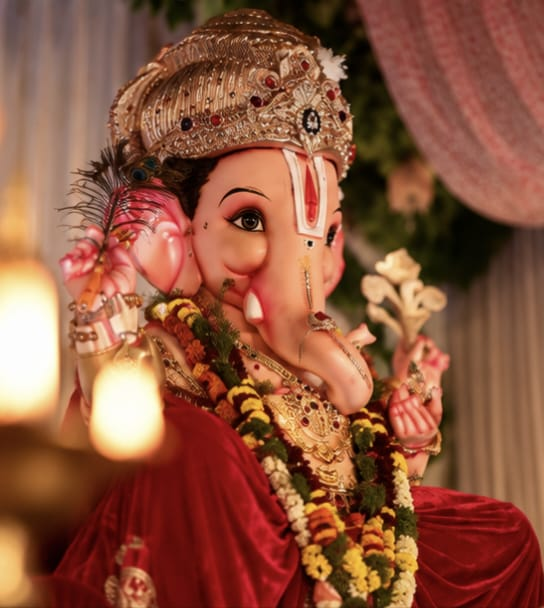
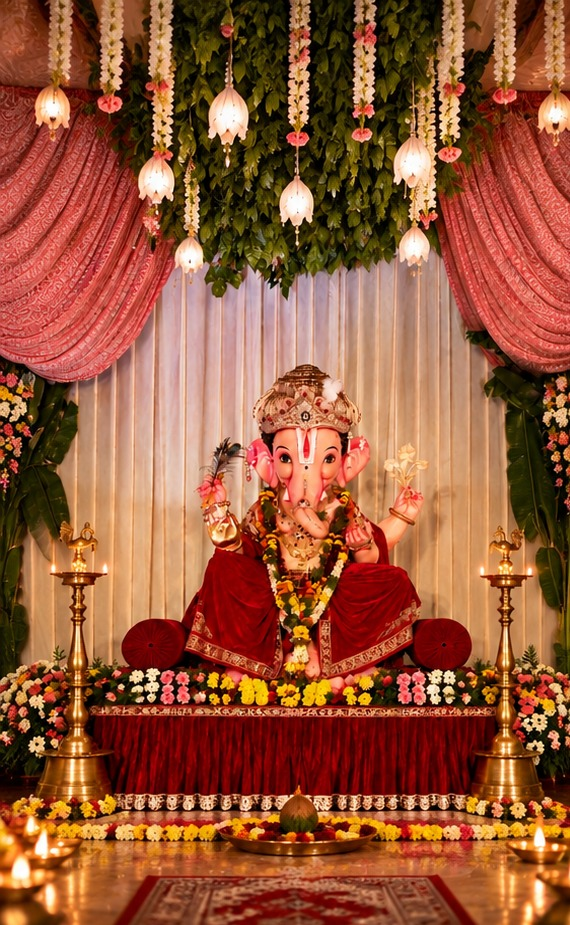
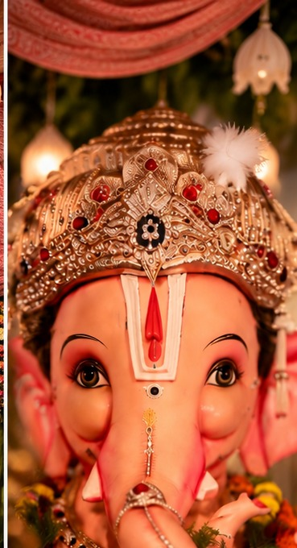
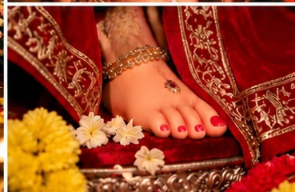
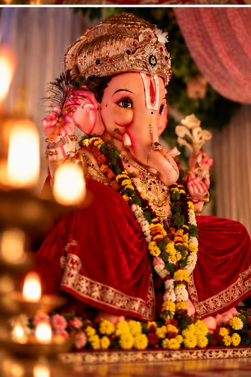
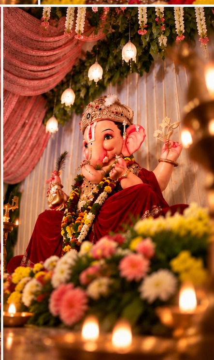

01सितंबर
गणेश स्थापना
सुबह 10:00 बजे
गणपति बाप्पा मोरया
॥ श्री गणेशाय नमः ॥
श्री सुदर्शन गणेश उत्सव समिति
भक्ति • सेवा • संस्कार • एकता
गणपति बाप्पा के पावन उत्सव को श्रद्धा, सेवा और उत्साह के साथ मनाने वाले हमारे मंडल में आपका हार्दिक स्वागत है।

अगले गणेश उत्सव में
हमारी आस्था
श्री गणेशाय नमः
गणपति बाप्पा हमारे लिए केवल एक उत्सव नहीं, बल्कि श्रद्धा, संस्कार, सेवा और समाज को एक साथ जोड़ने का माध्यम हैं।
श्री सुदर्शन गणेश उत्सव समिति सभी श्रद्धालुओं का हार्दिक स्वागत करती है। आइए, बाप्पा का आशीर्वाद लें और मिलकर उत्सव को यादगार बनाएँ।
उत्सव की झलक
सुबह 10:00 बजे
शाम 7:00 बजे
दोपहर 12:00 बजे
शाम 6:00 बजे
शाम 7:30 बजे
शाम 4:00 बजे
कार्यक्रम की तारीख और समय अपनी समिति के अनुसार बदल सकते हैं।
हमारी टीम
कार्यकर्ता
कार्यकर्ता
कार्यकर्ता
कार्यकर्ता
कार्यकर्ता
कार्यकर्ता
कार्यकर्ता
कार्यकर्ता
कार्यकर्ता
कार्यकर्ता
कार्यकर्ता
कार्यकर्ता
कार्यकर्ता
कार्यकर्ता
यादगार पल

भव्य दर्शन
बाप्पा का श्रृंगार
चरण दर्शन
मनमोहक रूप
मंडप दर्शनसेवा में सहयोग करें
समिति के धार्मिक, सामाजिक और सांस्कृतिक कार्यों में सहयोग देने के लिए नीचे दिए गए QR कोड का उपयोग करें।
यूपीआई आईडी: अपनी-UPI-ID@upi
 अपना असली QR कोड यहाँ रखें
अपना असली QR कोड यहाँ रखेंहमसे जुड़ें
अपना मंडल पता यहाँ लिखें
+91 XXXXX XXXXX
अपना ईमेल यहाँ लिखें